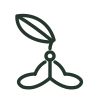

01 / TÁN CHE
Tán chở che
Một chiếc lá rộng lệch sang bên tạo mái tán; cuống dừng nhẹ phía trên đầu người đang ngồi thiền, để khoảng thở tách tán lá khỏi dáng người.

Cùng hình · 64 / 40 / 24 px
Chữ ký thương hiệu
Một chút yoga
Trên nền tối / nền sage
Ấn tượng: êm, có cảm giác được nâng đỡ; đầu tròn giúp dáng thiền được nhận ra nhanh. Kiểm tra thêm: ở 24 px kiểm tra khoảng thở giữa cuống và đầu còn đủ rõ không.